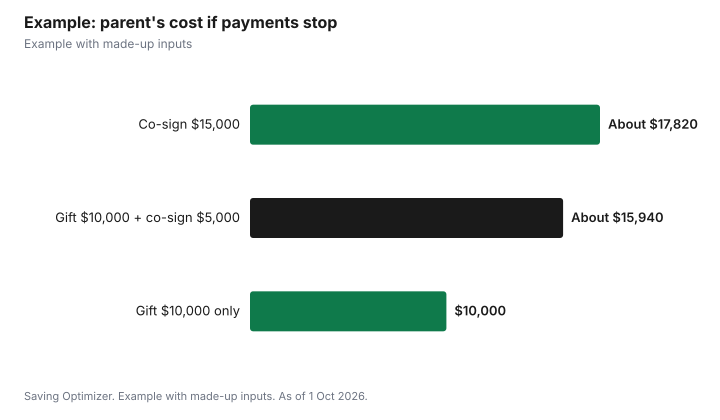

Education · Canada
Co-Signing a Student Loan or Line of Credit: What Parents Risk in Canada

When a parent co-signs a student line of credit, the parent becomes equally responsible for the entire unpaid balance, not just a share, according to the Financial Consumer Agency of Canada (FCAC). If your child stops paying, the lender can look to you for all of it. Before signing, make sure your child has applied for government student aid, which carries no interest on the federal portion and offers the Repayment Assistance Plan, so the bank credit covers only the gap. Ask for the lowest limit that does the job, insist on receiving statements, which is your right as a joint borrower at a federally regulated lender, and write down how the family will handle payments. Only co-sign an amount you could repay yourself.
Key takeaways
- A co-signer is a joint borrower and is equally responsible for the whole unpaid balance.
- Joint borrowers at federally regulated lenders have the right to the same statements.
- Government student aid first: no interest on Canada Student Loans since 1 April 2023.
- Ask for a lower limit; you can usually request an increase later.
- Optional credit insurance cannot be a condition of approval.
- Example with made-up inputs: what a parent owes if payments stop.
What co-signing means
FCAC defines a joint borrower as someone who signs a mortgage, loan, credit card or line of credit agreement with one or more other people, also known as co-signing. Each joint borrower is equally responsible for repaying the unpaid balance. On its student line of credit page, FCAC notes that a student may need someone, such as a parent, to co-sign, and that this person will also be responsible for the debt if the student cannot pay it back. Some lenders do not require a co-signer for every student: TD, for example, says co-signer requirements for its Student Line of Credit depend on credit history and are assessed case by case.
Your rights as a joint borrower
| Right | What it means for a parent |
|---|---|
| Cost disclosure | You receive information on the interest and other costs |
| Ongoing statements | You receive the same statements as the other borrower |
| Waiving disclosure | Only if you consent, verbally or in writing; verbal consent must be confirmed in writing |
| Format | Paper, or electronic if you agree |
These rights apply when you deal with a federally regulated institution such as a bank or federal credit union. Keep receiving statements. The worst surprise for a co-signer is learning months later that interest payments stopped.
The risks, plainly
- You can be asked to pay the full balance if your child does not.
- A line of credit requires at least interest payments while the student is in school, so missed payments can start early.
- The debt may affect your own borrowing room, since lenders consider obligations you have taken on; ask your lender how a co-signed account would be treated in your own applications.
- A line of credit has no Repayment Assistance Plan, unlike government student loans.
- Family strain: unclear expectations about who pays can cause conflict, which is why rules in writing help.
How to limit the risk
- Make sure your child applies for government aid every year, so bank credit covers only what is left.
- Ask for the lowest limit that covers one year, and review it each year.
- Set up automatic interest payments from your child's account, and know when they are due.
- Decline optional credit insurance unless you have read it and want it; FCAC says lenders cannot require it.
- Write a simple family agreement: who pays interest during school, what happens if your child leaves the program, and when repayment starts.
- Ask the lender whether a co-signer can be released later, and what it would require.
Alternatives to co-signing
- Gifting a fixed amount each year instead of guaranteeing open-ended credit; see the related guide on gifts and loans to adult children.
- Using RESP withdrawals, if you have an RESP.
- Helping your child budget so the gap is smaller: residence versus home, meal plans and textbooks.
- Encouraging a bank that does not require a co-signer for your child's profile, if one is available.
- Transferring your child's unused tuition amount to you on your tax return, up to the federal limit, to reduce family tax.
Example with made-up inputs
These numbers are an example with made-up inputs. Maria co-signs her son's $15,000 student line of credit at a made-up 7%. He draws $5,000 a year for three years and pays interest during school. In his fourth year he leaves the program and stops paying. The balance is $15,000, and interest at 7% adds about $1,050 a year. If Maria takes over and repays over five years, her payments are about $297 a month, or about $17,820 in total. Had she co-signed for a $5,000 limit and gifted $10,000 instead, her total cost would have been the $10,000 gift plus up to about $5,940 if she had to repay the smaller line, or about $15,940, with a known ceiling from the start.
| Approach | Parent's cost |
|---|---|
| Co-sign $15,000, repay over 5 years at 7% | About $17,820 |
| Gift $10,000, co-sign $5,000, repay it at 7% | About $15,940 |
| Gift $10,000 only, no co-signing | $10,000 |

If payments stop
If your child misses a payment, act quickly. Call your child first to find out why: a delayed paycheque is different from leaving school. Then call the lender to ask what is owed, whether the account is past due, and what options exist, such as temporarily paying interest only. Paying the missed interest yourself while you sort things out keeps the account current. If your child has left school, ask when the interest-only period ends and principal payments begin, so you can plan. Finally, revisit the family agreement: decide whether your child will repay you, on what schedule, and whether that arrangement should be written down as a loan between you.
Before you sign: a short checklist
- Your child has applied for government student aid this year.
- You know the exact limit, rate and how the rate can change.
- You know when principal payments start.
- You will receive statements directly.
- You could repay the full limit yourself if needed.
- You and your child have agreed in writing on who pays what.
Questions to ask the lender
- Is a co-signer required for my child, or only recommended?
- What is the interest rate, and how is it set?
- When do principal payments start after my child leaves school?
- Can I receive statements and alerts directly?
- Can the co-signer be removed later, and how?
- What happens if my child leaves the program before finishing?
Related: line of credit versus student loan and paying for an adult child's university.
Sources
- Financial Consumer Agency of Canada, Disclosure of information to joint borrowers: know your rights (updated 15 Oct 2025), canada.ca (Wayback copy), as of 1 Oct 2026.
- Financial Consumer Agency of Canada, Student lines of credit (updated 14 Oct 2025), canada.ca (Wayback copy), as of 1 Oct 2026.
- TD Bank, TD Student Line of Credit, td.com, as of 1 Oct 2026.
- Canada Revenue Agency, Transferring and carrying forward amounts (tuition), canada.ca (Wayback copy), as of 1 Oct 2026.
- Amounts, rates and payments in the example are made-up inputs and rounded.
Frequently asked questions
Am I responsible for the whole loan if I co-sign?
Yes. FCAC says joint borrowers are equally responsible for repaying the unpaid balance.
Can a co-signer see the account statements?
Yes. With a federally regulated lender, every joint borrower has the right to the same statements unless they consent otherwise.
Do students need a co-signer for a student line of credit?
Sometimes. FCAC says a co-signer may be needed, and some banks, such as TD, assess it case by case.
Do Canada Student Loans need a co-signer?
Government student aid is assessed through the student aid application, and the federal portion has carried no interest since 1 April 2023, so apply for it first.
Do I have to buy insurance on a co-signed line of credit?
No. FCAC says lenders cannot require optional credit insurance for approval.
How can parents reduce the risk of co-signing?
Ask for a lower limit, receive statements, set up automatic payments and write a family agreement on who pays what.
Researched and drafted with AI assistance and fact-checked against official Canadian sources. How we create content.
Disclosure: Saving Optimizer may earn a commission if a partner link is added later. No partnership is claimed on this page. Education only.